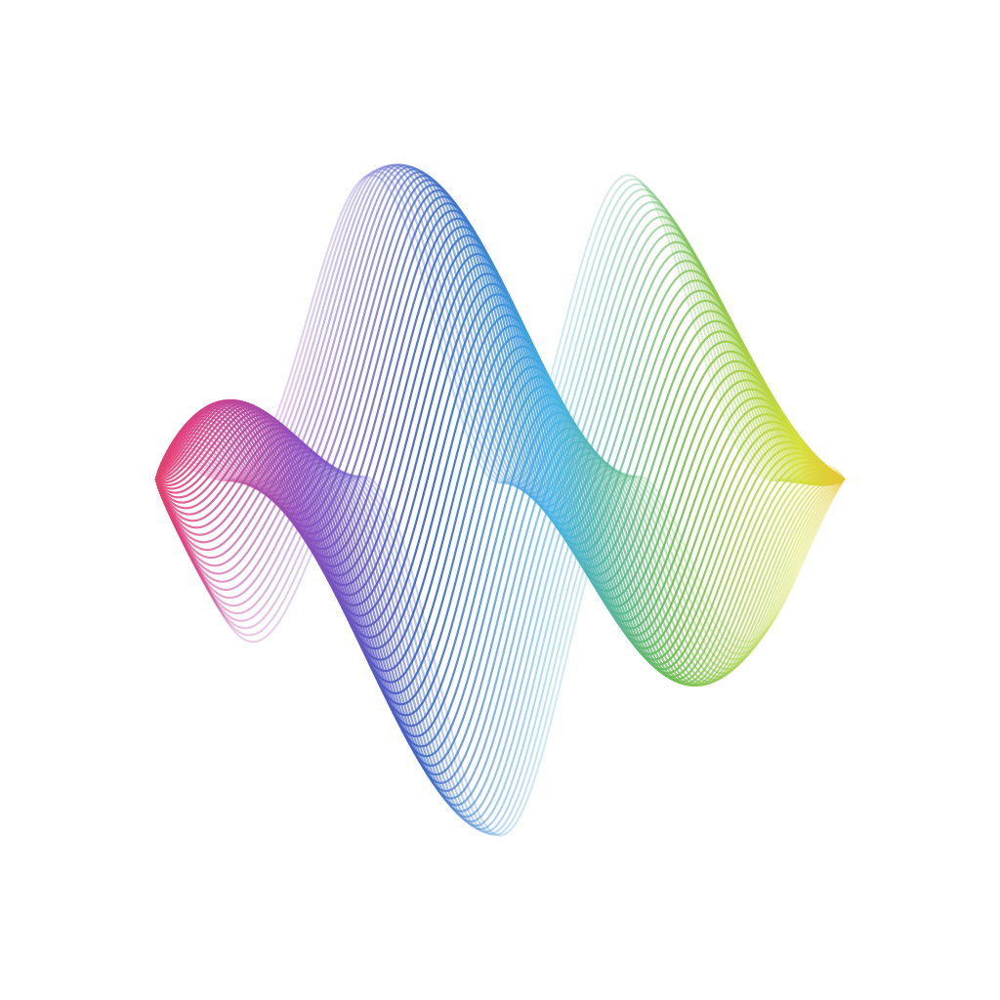

Pixel Studio Guitar Lab｜民謠吉他 第十章
級數與和弦編排
Progressions · Arranging
主講：畫素音樂工作坊 李奕勳
musicallanding@gmail.com
互動手機同步
Today · 120 Minutes
今天的路線：理解和弦排列的道理
起低音複習、聆聽進行｜20 分鐘
承級數、功能、常見進行｜35 分鐘
休10 分鐘
轉代理、七和弦、配和弦、編曲｜35 分鐘
合卡農進行合奏｜20 分鐘
- 以級數說出和弦，瞭解主、下屬、屬三種功能
- 能夠分辨四種最常見的和弦進行
- 學會使用代理和弦與七和弦，為伴奏更換色彩
- 為一段簡單的旋律配上和弦，並規劃一首歌的編曲
互動舉手計票
起00:00–00:20 暖身與回顧
下行低音，目前彈奏是否順暢？
- 調音之後，C → G/B → Am → Am/G → F → C/E → Dm → G 彈奏一輪
- 兩位同學分享：為期中曲目加上的低音線
- 老師回答上週出場券的問題
你是否發現，許多歌曲的和弦都很相似？
互動先預測再揭曉
起想一想
同一組和弦，能寫出完全不同的歌曲，原因在哪裡？
選出最好的解釋
- 因為歌手不同
- 因為和弦有版權，大家只能使用那幾個
- 和弦負責情緒的走向，旋律、節奏與歌詞讓每首歌各有特色
- 那些歌曲本來就相同
和弦進行如同故事的大綱：「平靜 → 出發 → 緊張 → 回家」。同樣的大綱，可以寫出無數個不同的故事。
原講義第四章
級數，是將以調性為基礎的順階和弦轉換為數字。以數字思考，和弦進行就能在每個調通用。
承00:20–00:55 第四章、級數 Progression 與順階和弦
七個級數，七個角色
| 級數 | 名稱 | C 大調 | G 大調 | 功能 |
|---|---|---|---|---|
| Ⅰ | 主和弦 Tonic | C | G | 主功能：穩定、回家 |
| ii | 上主和弦 Supertonic | Dm | Am | 下屬功能：出發 |
| iii | 中和弦 Mediant | Em | Bm | 主功能（較弱） |
| Ⅳ | 下屬和弦 Subdominant | F | C | 下屬功能：出發 |
| Ⅴ | 屬和弦 Dominant | G | D | 屬功能：緊張、想回家 |
| vi | 下中和弦 Submediant | Am | Em | 主功能（關係小調） |
| vii° | 導和弦 Leading Tone | Bdim | F#dim | 屬功能 |
承和弦的功能
在家、出發、想回家
主功能 TI、vi、iii・在家
下屬功能 SIV、ii・出門
屬功能 DV、vii°・想回家
主功能 TI・回到家
主和弦
聽起來如同句號。歌曲的開頭與結尾通常落在這裡。
下屬和弦
離開家，緊張感仍然輕微。常出現在副歌的第一個和弦。
屬和弦
最緊張、最想解決。V 之後接上 I，耳朵就會鬆一口氣。
互動六線譜練習器
承屬七和弦
V7 → I：最強烈的回家訊號
G7
D7
E7
A7
- G7 = G 和弦加上 F。F 和 B 形成不協和的增四度，強烈地想要解決
- B 往上移動到 C、F 往下移動到 E，就落在 C 和弦上
- 任何調的 V 加上七度，都會成為「屬七和弦」
- 歌曲的最後一句，將 V 換成 V7，結尾會更有力量
承常見和弦進行
四種耳熟能詳的和弦進行
| 名稱 | 級數 | C 大調 | 感覺 |
|---|---|---|---|
| 流行四和弦 | I–V–vi–IV | C G Am F | 明亮、勵志，副歌最常見 |
| 悲傷版四和弦 | vi–IV–I–V | Am F C G | 同樣四個和弦，從小調開始，就轉為憂傷 |
| 五〇年代進行 | I–vi–IV–V | C Am F G | 復古、甜美，老情歌經常使用 |
| 卡農進行 | I–V–vi–iii–IV–I–IV–V | C G Am Em F C F G | 帕海貝爾《卡農》的低音走向，莊重溫暖 |
| Ⅱ–Ⅴ–Ⅰ | ii–V–I | Dm G C | 爵士樂最常用的進行，結尾非常有力量 |
互動聽辨遊戲
承耳朵練習
聆聽四個和弦，分辨是哪一種進行
- 先聆聽第一個和弦：明亮（I）或憂傷（vi）
- 再聆聽最後一個和弦：是否回到家
- ii–V–I 的最後兩個和弦相同，代表「回家後停住」
- 連續答對 5 題，代表你已經能分辨常見的和弦進行
互動換和弦練習器
承動手彈奏
將四種進行都彈奏一次
Break
10:00
休息十分鐘，哼唱一首歌，猜測它的和弦
轉01:05–01:40 關係調與代理和弦
換一個同家族的和弦，色彩就隨之改變
| 原本的和弦 | 可以換成 | 替換理由 |
|---|---|---|
| C（I） | Am（vi）、Em（iii） | 共用兩個音，同屬主功能 |
| F（IV） | Dm（ii） | 共用 F、A，同屬下屬功能 |
| G（V） | G7、Bdim（vii°） | 同屬屬功能，緊張度更高 |
關係大小調
C 大調與 A 小調使用同一組和弦，只是「家」的位置不同。G 大調的關係小調是 E 小調。
動手嘗試
將 C → G → Am → F 的 F 換成 Dm：C → G → Am → Dm，聽起來更柔和、更有層次。
互動換和弦練習器
轉色彩和弦
加上一個七度：Cmaj7、Am7、Dm7、Fmaj7
Cmaj7
Am7
Dm7
Fmaj7
互動六線譜練習器
轉為旋律配和弦
《小星星》：每個重拍的音，屬於哪一個和弦？
方法 觀察每小節第 1、3 拍的旋律音，找出包含這個音的和弦（C、F、G）；最後一句回到 C。
｜C｜F C｜F C｜G C｜ 「La La」配 F、「Re Re」配 G，最後的「Do」回到 C。
轉第十一章、基本編曲入門
一把吉他的編曲：讓每一段都有不同的樣貌
| 段落 | 和弦 | 右手 | 小技巧 |
|---|---|---|---|
| 前奏 | 使用副歌的和弦 | 指法或四分音符 | 最後一小節停一拍，讓歌手進來 |
| 主歌 | 原本的和弦 | 指法、蹦洽拉 | 加入替代根音、低音線 |
| 導歌 | 上行低音 | 8 Beats，越刷越密集 | 最後一小節只刷第 1 拍 |
| 副歌 | 可加入代理和弦、七和弦 | 切分、16 Beats | V 換成 V7 結束 |
| 尾奏 | I 或 Imaj7 | 放慢速度，最後刷奏一次 | 讓和弦完整延續再停止 |
原講義的編曲章節只有綱要，本表依照課堂實作整理，期末作品可以直接套用。
互動曲例聆聽・YouTube
轉原講義曲例
原講義曲例：每一段的伴奏都各有不同
聆聽前奏、主歌、副歌各自使用的伴奏與樂器，記錄下來，作為編曲大改造的參考。
互動分組任務・計分
轉分組挑戰
編曲大改造
- 題目：C → G → Am → F，八小節，重複兩次
- 第一次當作主歌、第二次當作副歌，運用今天的工具做出差別
- 至少使用一個代理和弦或七和弦，並以 V7 結尾
- 上台演奏並說明設計：主副歌有對比 2 分、和弦變化 2 分、拍子穩定 1 分
互動迷思破解・翻牌
合01:40–02:00 和弦觀念
迷思還是事實？
使用相同的和弦進行，就是抄襲
迷思和弦進行屬於共通的素材，作品的特色來自旋律與歌詞。
級數讓換調變得很簡單
事實記住 I–V–vi–IV，任何調都能立刻彈奏出來。
七和弦只能用在爵士樂
迷思流行抒情歌曲大量使用 maj7 與 m7，讓聲音更溫柔。
V 和弦後面一定要接 I
迷思V 接 vi 稱為「假終止」，能製造意外的轉折，許多副歌都這樣使用。
小調的歌曲一定很悲傷
迷思快速的小調歌曲，也可以很有力量、很帥氣。
配和弦時，先觀察重拍的旋律音
事實重拍的音最能決定和弦，弱拍的音可以是經過音。
互動全班合奏
合合奏
卡農進行：全班四部合奏
I–V–vi–iii–IV–I–IV–V
C
G
Am
Em
F
C
F
G
分成四部：第一部只彈低音、第二部彈奏指法、第三部刷奏 8 Beats、第四部刷奏切分。每一輪加入一部，聆聽聲音越來越豐富。
互動錄音對照
合驗收
錄下你的編曲
- 將 C → G → Am → F 彈奏兩次：第一次當作主歌、第二次當作副歌
- 重新聆聽時檢查：兩次聽起來是否有差別
- 期末作品可以直接使用這套設計
Today In Three Lines
主功能是家、下屬出門、屬功能想回家，
級數讓和弦在每個調通用，
編曲讓同一組和弦產生起伏。
互動出場券 3-2-1
合Exit Ticket
離開教室前，寫下 3-2-1
期末準備
第十二章是期末作品。請開始構思形式：彈唱一首喜歡的歌、改編一首歌，或是創作自己的歌。
互動自主學習紀錄
Homework
每天 15 分鐘：和弦進行課表
調音
2 分鐘
2 分鐘
進行聽辨
3 分鐘
3 分鐘
四種進行
4 分鐘
4 分鐘
七和弦
3 分鐘
3 分鐘
自己配和弦
3 分鐘
3 分鐘
互動自主學習追蹤
Homework
課後練習：完成一項，點選一次打勾
- 寫出 C 大調與 G 大調的 I–V–vi–IV 與卡農進行
- 進行聽辨連續答對 5 題
- Cmaj7 → Am7 → Dm7 → G7，連續彈奏一輪
- 為《小星星》或一首兒歌配上和弦，並且自彈自唱
- 決定期末作品的形式與曲目，填寫第十一章課前問卷
互動課前問卷
Next Week
第十一章 旋律與音色技巧
搥弦、勾弦、滑弦、悶音、切音、推弦：
讓旋律更有表情。
掃描 QR Code，直接在網站上填寫第十一章的課前問卷。